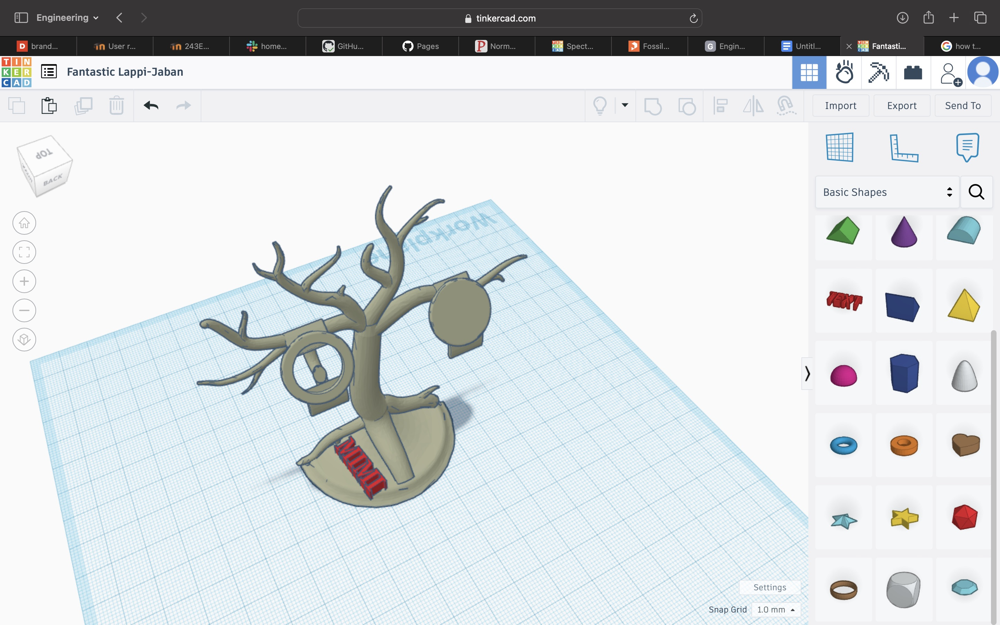
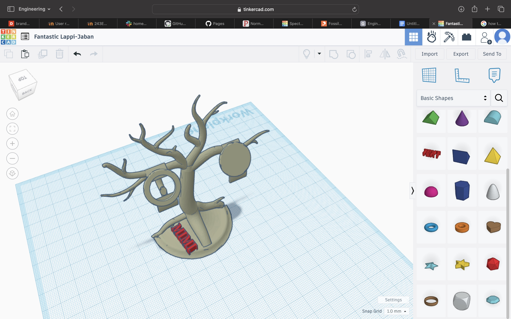
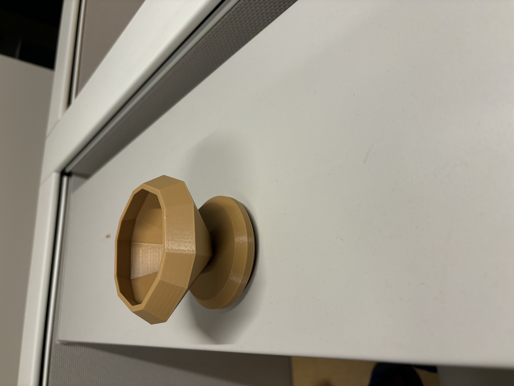
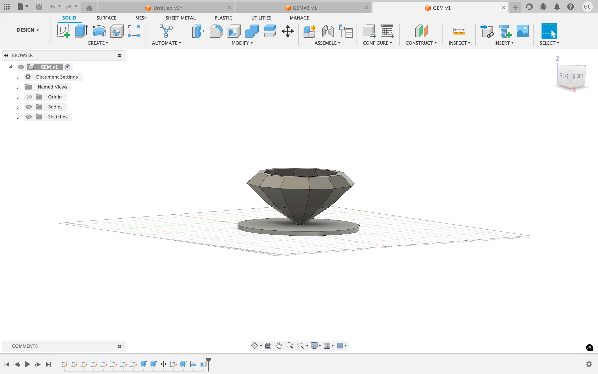
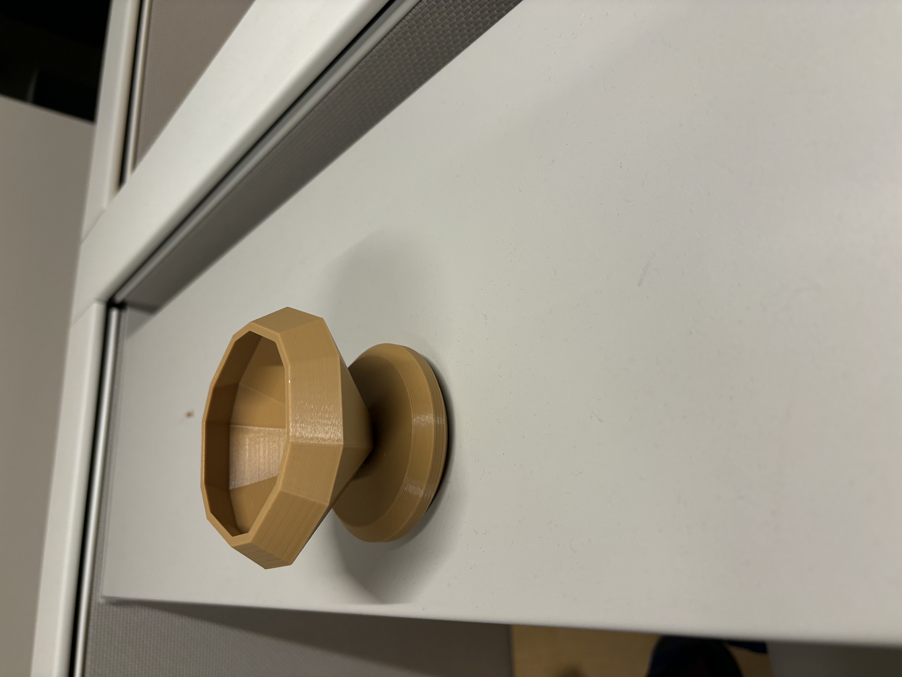
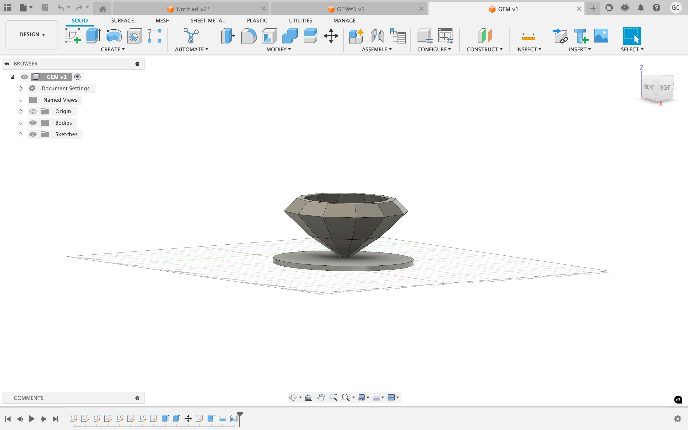
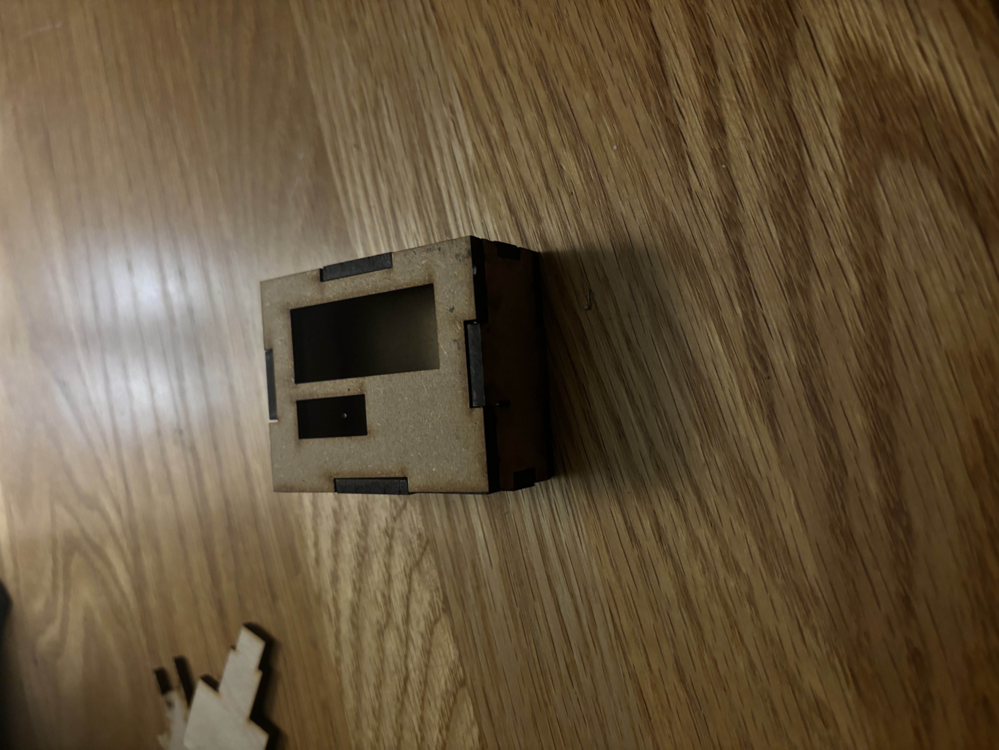
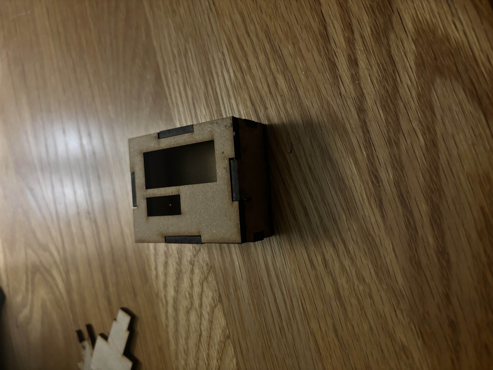

Projects
Print 1
Following the instructions provided I was able to install the print into the harddrive after editing it to fit my name, but I ran into multiple issues. First being and adhesion issues which I learned could be caused by the slightest touch to the surface being printed on. The second time I attempted to print my key chain the nozzle refused to print the remaining chain, which I later learned was caused by under extrusion of the machine, another machine failure.The next time times I would fail would be human error, with the third time being the lack of material being supplied to the printer and the fourth being another issue with the printers, as mine grew too close to the surface it meant to print in, scraping the surface of the platform. Initially the process was daunting, I had never printed something like this and so had my classmates but with trial and error, pressing buttons to see what they did, as well as some advice from Penny and other classmates I was able to finally understand and implement the keychain into reality.
Print 2
An important part of our 3D printing process was creating the overhang test, which was meant to verify the printer's capacity to handle intricate designs. At first, the printer's accuracy was struggling because of machine mistakes, which created substantial hurdles. The initial attempt was not successful with the structure being unstable and overhangs were not well produced. Following attempts failed even after recalibrating the equipment and resolving the issues. The overhangs were clearly not up to the design criteria, indicating the printer's inaccuracy and showing the need for more improvements in both printing quality and machine dependability.
 

Print 3
A unique set of difficulties came through the 3d printing process for the jewelry stand that I designed in Tinkercad. The first few issues were adhesion issues despite my preventative actions. The print being unable to stick to the surface created an unfinished and misaligned structure, the stands base warped and detached during print. The failure that occurred during this print exposed the further necessity of proper bed preparation as part of the 3d printing process.
Print 4
The Autodesk Fusion-designed diamond-shaped jewelry holder had serious problems when it was 3D printed. Despite the careful attention to detail that went into making the design both aesthetic and useful, a crucial structural flaw ultimately caused the design to fail. In particular, it turned out that the prongs meant to secure the jewelry were overly brittle, due to a lack of density. These prongs broke near the conclusion of the print process as it went on, some I broke off myself because it had been damaging the process. This breakage not only jeopardized the holder's integrity but also prevented the machine from finishing the remaining sections of the printing job. This mishap highlighted how crucial it is to strengthen fragile elements during the design stage in order to avoid similar problems in following prints.
 



Print 5
I made the decision to alter my most recent project in order to solve the problems I had run into with earlier 3D printing attempts. Even though the first design was better than the previous iterations, a weak joint point caused it to fail. The print failed partially as a result of this vulnerability. Still, this setback gave me insightful information. By adding organic supports and a 10% increase in the inlay, I was able to further polish the design and improve the structural stability. The updated design printed effectively, exhibiting dependability. This final version was not only robust, but it also demonstrated the value of iterative design changes and the need for strengthening structural components of these prints.
Hourglass 1
My first attempt at building the hourglass was quite challenging, with many failures along the way. I struggled to achieve the correct shapes, as well as the precise curves and points of intersection. However, after some research and personal experimentation, I managed to complete the design. The first major issue I encountered was with the scale—the design didn’t fit the intended size for the project. When I scaled it down, the model became bulky and lost the sleekness I was aiming for..
Hourglass 2
For my next attempt, I made several key adjustments to improve the design. After experimenting with different modifications, I finally developed an approach that achieved the proper shape for the hourglass. This version of the model resolved many of the issues I had encountered with the initial design, particularly in terms of the curves and intersections, which now aligned more accurately. Although the final fit is quite snug, I believe it’s close to what I envisioned, and I’m confident it will work well with the clock mechanism. Despite the tight fit, the overall structure appears sound, and I’m optimistic that it will function as intended. This process not only refined the design but also helped me better understand how to handle scale and precision for future projects.
laser print 1
My first laser print was challenging, particularly when it came to creating the finger joints. Even with some guidance on how they were supposed to work, I found them difficult to get right. After some trial and error, I eventually figured out the overall process, but I ran into an issue—the joints were too long and extended outside of the box, which affected the final result.(I lost the bottem and my first design did not include a cover for the box)
laser print 2
For my next laser print, I hoped to avoid the issues I had with the finger joints in my first attempt. This time, I had adjusted the sizing, so the joints wouldn’t be too long or stick outside the box. However, a new problem arose. When I uploaded the file as a DXF, I forgot to erase the lines that connected the finger joints to the main body of the box. As a result, the laser printer cut through the entire structure, including the fingers. Instead of assembling a complete box, I ended up with dozens of loose, cut-off finger pieces scattered across the table. It was frustrating, but it highlighted the importance of thoroughly reviewing files before printing.
 

laser print 3
I was confident that I had fixed all the issues I previously encountered. The finger joints were now perfectly sized, and I made sure to double-check the design file, removing any unnecessary lines to avoid another mishap with the laser cutter. Everything seemed to be on track, and I expected the clock to fit perfectly inside the box. However, when I finally assembled it, I discovered that the fit was much tighter than anticipated. While it wasn’t a complete failure—the box itself turned out great—the snug fit left little room for adjustment. Though the project was successful overall, this experience taught me that even small miscalculations in measurements can have a significant impact. I plan to create a new version of the box, this time with a bit more space, to ensure a smoother fit for the clock.


hand print 4
While it did take a while to complete the creation of this prostethic was simple and easy, the only issue I ad sseen was the printing of the main palm wher supports created a error on the prusa(spaghetti). Other than that the hand was easily assembled, sadly it isnt functioning fully because of a lack of proper screws but it works with some adjustments bypassing that.